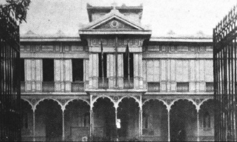
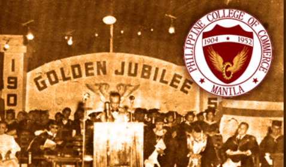
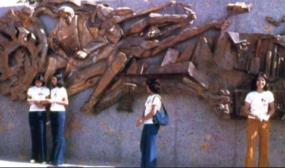
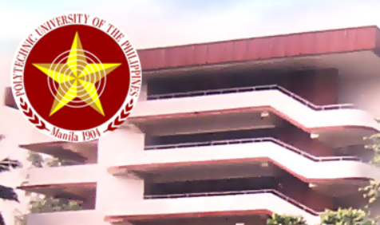
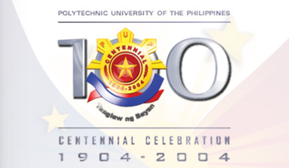
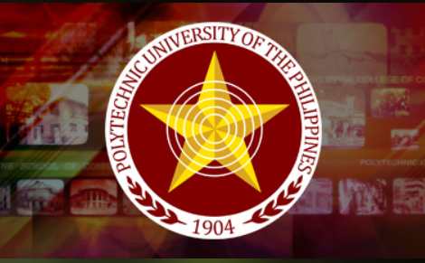

The PUP Quezon City Campus, formerly PUP Commonwealth Campus, is a 1.9-hectare forested land area and was assigned, transferred and endorsed to the Polytechnic University of the Philippines as ASSIGNEE by the Housing and Urban Development Coordinating Council-National Government Center Housing Committee (HUDCC-NGCHC), a government entity created by Executive Order No. 90 and with expanded functions under RA 7279 and Home Insurance And Guaranty Corporation (HIGC) as Assignor, a government owned and controlled corporation created under RA 580 and presently located at Don Fabian Street, Barangay Commonwealth, Quezon City. Thru the concerted efforts of Dr. Ofelia M. Carague, PUP Executive Vice President and Mr. Jaime E. Varela, Project Administrator, NGCHP, a Deed of Assignment was executed and signed by Atty. Dionisio C. Dela Serna, HUDCC-NGCHC Chairman, MR. Wilfredo F. Hernandez, HIGC President and DR. Zenaida A. Olonan, University President on 24 March 1997 with a sole objective to
“establish a branch or an extension of PUP at the National Government Center with a mandate to bring quality education and subsidized tuition fees to the urban poor communities of Quezon City, with priority given to those from the NGCHP.”
Prior to this, an execution of Deed of Donation, whereby two (2) halls - Rothlehner and Misereor Building today in honor to their generosity and benevolence as funding-donors in which the two buildings were built - were donated to PUP for its purposes entered into by and between the Sentro sa Ikauunlad ng Kasanayan at Hanapbuhay (SIKHAY) – an association duly registered with the Securities and Exchange Commission (SEC) represented by its President, Rev. Fr. Joel E. Tabora, S.J. and PUP on 26 February 1997.
Upon its opening in 1997 offering a Master in Educational Management under the Open University System, PUP Quezon City also offered Bachelor of Science in Information Technology and a 1-Year Certificate in Information Communication Technology on its first year of formal operations during the Academic Year 1998-1999. As part of the donated property, the two original structures known as Rothlehner and Misereor Halls today became integral parts of the campus and now served as classrooms, Learning Resource Center, and academic and administrative offices for students and faculty members.
On July 29, 1997, PUP Quezon City was officially established during its formal launching on the very same grounds with the special presence of Mr. Rothlehner who himself was awarded the Plaque of Recognition by PUP President, Dr. Zenaida A. Olonan, together with other honored guests from the Local Government of Quezon City and PUP administration.
At present, there are seven undergraduate program offerings, namely:
1. Bachelor of Science in Information Technology
2. Bachelor in Business Teacher and Livelihood Education major in Home Economics and major in Information Communication Technology
3. Bachelor of Science in Business Administration major in Marketing Management and Human Resource Management
4. Bachelor of Science in Entrepreneurship and
5. Bachelor of Public Administration with specialization in Fiscal Administration
In addition, the campus also offers:
-Diploma in Office Management Technology with specialization in Medical Office Management.
True to the university’s mandate as Pamantasan ng Bayan, its graduate degree thru the Open University education system increased by offering two additional programs including the first program offering as practical alternative venue from PUP Main Campus, namely:
1. Master in Educational Management
2. Master in Information Technology
3. Master in Public Administration
The PUP Quezon City Campus presently has a total of four buildings which include the newly constructed Academic Building with 12 classrooms and another one that houses the Audio-Visual Room and Computer Laboratory. In addition, an Ecumenical Chapel that can be converted to a mini hall and the Winnie Castelo Welfare Complex, a covered court that cater to the nonacademic needs of the students.
Considered as a miniature of the PUP Main Campus in its design, this “Green Campus” is a viable option for the Iskolar ng Bayan coming from northeast of Metro Manila and as far as Rizal and Bulacan as a haven for their search for knowledge. And to seal its official existence as an affirmation of the University’s commitment to democratize access to educational opportunities for economically challenged students of society, Republic Act 11347, otherwise known as the “PUP Quezon City Campus Act” was signed into law on June 25, 2019. This was made possible by the 17th Congress House Bill No. 7734 through the sponsorship of the 2nd District of Quezon City Representative, Honorable Winston “Winnie” T. Castelo in the House of Representatives as well as the Chair of Committee on Education, Arts and Culture, Honorable Francis “Chiz” G. Escudero from the Senate.
Started as petitions to have a higher educational institution for the youth at the National Government Center area from the community organizations and church groups, namely; Parokya ng Mabuting Pastol (PMP), Kaagapay sa Makatarungan at Pantay na Paninirahan, Inc. (KAMPI), SUPERBLOCKS, and Kristong Hari Foundation (KHF), and negotiations with local officials and other government agencies, the PUP Quezon City is a pantheon of concrete success towards the struggle in people’s fight against ignorance. The campus will continue its passion and commitment to “provide quality education to the urban poor communities of Quezon City and its neighboring localities.”
History of PUP Main
The history of PUP may well parallel the nation's growth and development. As it met the needs of a fledgling Philippine civil service under American rule forged from anvil of Spanish colonialism, so will it serve the rising expectations of the people in the 21st century...desirous now of reclaiming their rightful place in the community of independent nations. As it has withstood the test of time, so will it continue to pace contemporary Philippine history.
Here are the highlights of its growth from a mere business school with an itinerant existence to the country's largest state university. Scroll down to view the PUP history timeline.
1904-1951

Humble beginnings as a Business School
In response to the demand for training personnel for the government service and to the felt need to provide skills essential for private business employment, the Manila Business School was founded on October 19, 1904 as part of a City School system under the superintendence of G. A. O'Reilly.
1952-1971

On becoming a College
Through Republic Act (RA) 778 passed by both houses of Congress on May 20, 1952 and signed by then Philippine President Elpidio Quirino on June 21, 1952, the PSC was converted into the Philippine College of Commerce (PCC).
1972-1985

Transforming into a University
During this period, the PCC was converted into a chartered state university and accordingly renamed Polytechnic University of the Philippines (PUP) through Presidential Decree (PD) 1341. This led to the broadening of course offerings and the restructure/streamlining of the University's administrative organization.
1986-1990

Education as an equalizer
This period brought about a dramatic change in the University and reaffirmed its commitment to education as an equalizing instrument in the development of the youth in preparation for their role and responsibility in the progress and development of the nation.
1991-1999
Change is constant
To keep pace with changing conditions, the University underwent continuous change. During this period, the first lady president of the University was appointed, the first University president underwent a selection committee, a series of infrastructure projects were made, and an ICT infrastructure was built.
2000-2011

Towards an epistemic community
The University has been and has sustained its role as a worthy catalyst of change for the improvement and raising the quality of lives of its graduates and their families being the centerpiece of its mission as a state university. PUP continues to make significant contributions to the social and economic development of our country.
2012

Towards an epistemic community
The University has been and has sustained its role as a worthy catalyst of change for the improvement and raising the quality of lives of its graduates and their families being the centerpiece of its mission as a state university. PUP continues to make significant contributions to the social and economic development of our country.